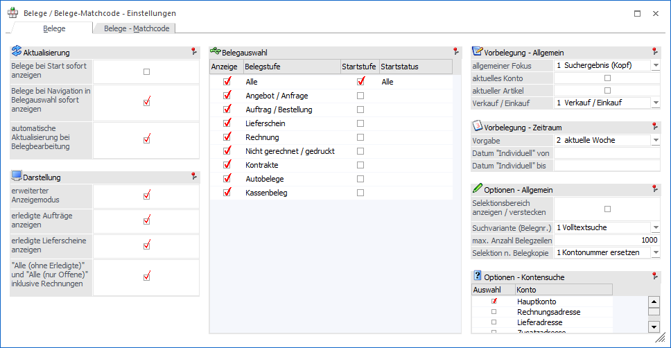
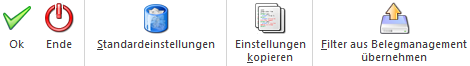

Durch die Anwahl des Buttons "Einstellungen" im Programm "Belege" bzw. "Belege - Matchcode" können individuelle Einstellung für die Anzeige und das Programmverhalten getroffenen werden.

Das Fenster unterteilt sich hierbei in die folgenden Register, welche in den nachfolgenden Kapiteln beschrieben werden:
ü Register "Belege"
In dem Register
"Belege" können Einstellungen für das Fenster "Belege" getroffen werden.
ü Register "Belege - Matchcode"
In
dem Register "Belege - Matchcode" können Einstellungen für das Fenster "Belege -
Matchcode" getroffen werden.
Buttons

Ø Ok
Durch Anwahl des Buttons "Ok" bzw. der Taste F5 werden die Einstellungen gespeichert und direkt angewendet.
Hinweis
Änderungen im Bereich "Vorbelegungen" werden ab dem nächsten Aufruf des Fensters "Belege" bzw. "Belege - Matchcode" verwendet.
Ø Ende
Bei Anwahl des Buttons "Ende" wird das Fenster geschlossen und alle nicht gespeicherten Eingaben verworfen.
Ø Standardeinstellung
Mit Hilfe des Buttons "Standardeinstellungen" können die WinLine Standardeinstellungen (für beide Register) wiederhergestellt werden.
Hinweis
Die Wiederherstellung, welche nach Bestätigung einer Sicherheitsabfrage durchgeführt wird, hat ein automatisches Speichern zur Folge.
Ø Einstellungen kopieren
Die Anwahl des Buttons "Einstellungen kopieren" öffnet das Fenster Belege / Belege-Matchcode - Einstellungen kopieren, in welchem die Einstellungen auf andere Benutzer kopiert werden können.
Hinweis
Der Buttons steht nur WinLine Benutzer des Typs "Administrator" oder mit der Administratorenberechtigung "Datenadministration" zur Verfügung.
Ø Filter aus Belegmanagement übernehmen
Durch Anwahl dieses Buttons werden die Filter aus dem Belegmanagement (nach einer Sicherheitsabfrage) in das Programm "Belege" bzw. "Belege - Matchcode" übertragen.
Hinweis
Es werden nur jene Filter aus dem Belegmanagement übernommen, bei denen das Objektrecht "Ersteller" vorliegt. Sollten zu übernehmende Filter bereits existieren, so erfolgt keine Übernahme dieser Filter.